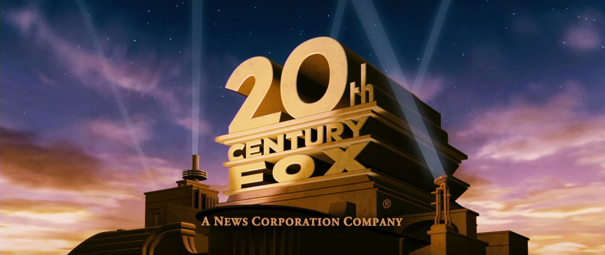
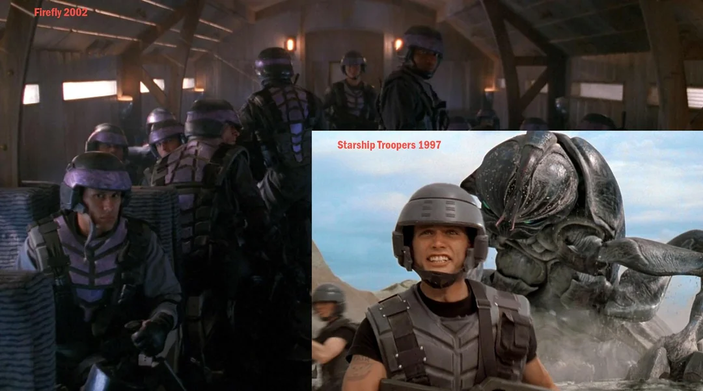
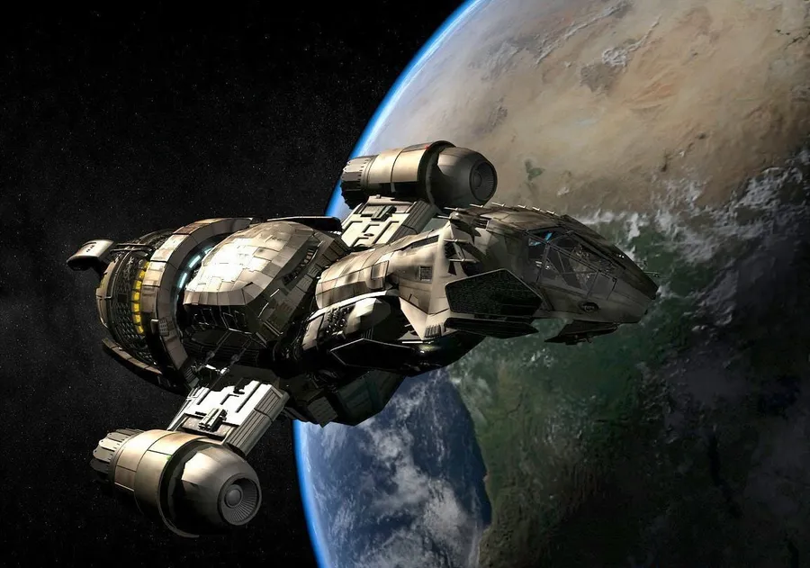
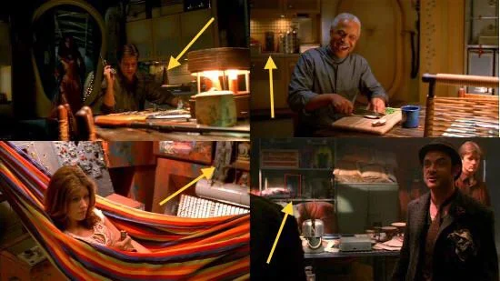
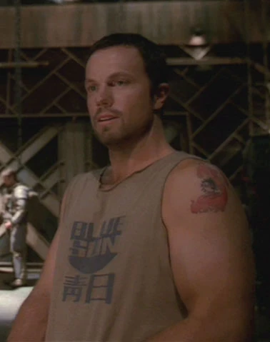
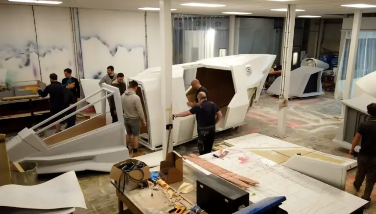

Curiosidades del Universo Firefly
Secretos del Rodaje
-
Emisión sin orden:
La cadena Fox transmitió los episodios mezclados. El episodio piloto original, llamado "Serenity", que presentaba a los personajes y explicaba la historia, se emitió como el último de la serie, arruinando la continuidad.

-
Trajes reciclados:
Los uniformes militares que usan los soldados de la Alianza en el episodio piloto son exactamente las mismas armaduras y cascos que se crearon originalmente para la película Starship Troopers de 1997. Lo más curioso es que este vestuario pasó antes por la serie Power Rangers Lost Galaxy (1999) para vestir a los soldados de Terra Venture. Un dato extra: en los comentarios del DVD de Firefly revelaron que, al pintarlos a las apuradas de color morado para la serie, ¡algunos trajes todavía tenían manchas de sangre de bicho alienígena del rodaje anterior!

-
Silencio espacial real:
Firefly es una de las poquísimas series de ciencia ficción que respeta las leyes de la física clásica en el espacio. Durante las escenas exteriores en el vacío cósmico, no se escuchan explosiones ni ruidos de motores.

-
El Han Solo escondido:
El equipo de efectos visuales era tan fanático de Star Wars que escondió una pequeña figura de Han Solo congelado en carbonita en varios decorados de la nave. Si mirás con mucha atención el fondo de algunas escenas en el taller de Kaylee, lo vas a poder ver.

-
La corporación Blue Sun:
En casi todos los planetas de la frontera aparecen carteles, remeras o latas de comida con el logo de "Blue Sun". Es una megacorporación siniestra que controla el comercio del sistema y que iba a ser el gran enemigo de la segunda temporada que nunca llegó a filmarse.

-
Una nave a escala real:
A diferencia de otras producciones donde los sets están separados, el set de la Serenity se construyó en un estudio gigante con dos pisos reales y conectados. Los actores podían caminar desde la cabina de mando, pasar por los pasillos y llegar al comedor sin cortes de cámara, lo que ayudó a que se sintieran como una verdadera tripulación.

Diccionario de la Frontera: Chino-Inglés
En el futuro de Firefly, las dos únicas superpotencias supervivientes se fusionaron para formar la Alianza. Por esto, los personajes utilizan constantemente insultos y jerga en chino mandarín. Aquí tenés los términos más comunes:
Shiny:
Kaylee Frye (la mecánica).
Es su palabra de cabecera absoluta para demostrar alegría,
inocencia
o que
los motores andan bárbaro.
Gorram:
Jayne Cobb o el Capitán Mal Reynolds.
Jayne fue el primero en decirla en televisión, pero el
Capitán Mal
la usa constantemente en sus protestas. La cara de quejoso de cualquiera de los dos le queda
pintada.
Dong ma?:
El Capitán Mal Reynolds.
Si bien es el chino mandarín más usado por todos en el set, la
escena
más
icónica de todas es cuando Mal mira fijo a Kaylee en el tenso capítulo "A la Deriva" y le da una
orden
directa cerrando con un firme “dong ma?”.
Rutting:
Jayne Cobb (el mercenario).
Es el insulto preferido de Jayne para quejarse con brutalidad
sobre
la
Alianza, la cadena de mando o cuando las cosas no salen como él quiere en los atracos.